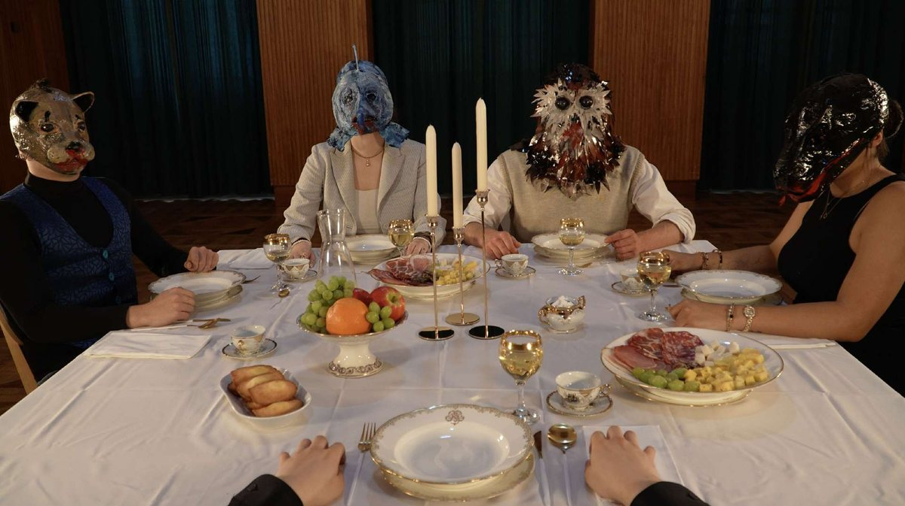

[ PORTFOLIO PERSONNEL ]
Hyunseok
Hyunseok
Yoon
- vie & mort
- réalité / fiction
- fragilité de l'être
- normes sociales
- naturel / artificiel
Je m'intéresse à des sujets liés à la vie et à la mort, aux frontières entre réalité et fiction, ainsi qu'à la fragilité de l'être intérieur : un regard critique sur certaines normes sociales et humaines de notre époque, et la coexistence entre le naturel et l'artificiel.
